King black dragon
| Config name | king_dragon |
| NPC id | 50 |
| Combat level | 276 |
| Hitpoints | 240 |
| Attack / Strength / Defence | 240 / 240 / 240 |
| Respawn | 150 ticks |
| Options | Attack |
| Aggression | king_dragon |
| Wander range | 20 tiles from spawn |
| Max range | 20 tiles from spawn |
| Area folder | area_wilderness |
| Defined in | scripts/areas/area_wilderness/configs/king_dragon.npc |
| Bonuses | Stab def 70, Slash def 90, Crush def 90, Magic def 80, Range def 70 |
King black dragon
The biggest meanest dragon around.
Show all 1 spawn on the world map → Open in knowledge graph →
Drops
Drop script: scripts/areas/area_wilderness/scripts/king_black_dragon.rs2 (specific handler)
Always dropped
| Item | Quantity | Rarity | Notes |
|---|---|---|---|
| Dragon bones | 1 | Always | |
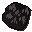 Dragonhide | 1 | Always |
Drop table
| Item | Quantity | Rarity | Notes |
|---|---|---|---|
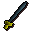 Rune longsword | 1 | 5/64 (7.81%) | |
| 310 | 5/64 (7.81%) | ||
| 690 | 5/64 (7.81%) | ||
| 105 | 5/64 (7.81%) | ||
| 105 | 5/64 (7.81%) | ||
| 1 | 9/128 (7.03%) | ||
| Ultra-rare drop table table | see table | 1/16 (6.25%) | |
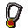 Amulet of strength | 1 | 7/128 (5.47%) | |
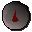 Blood rune | 15 | 5/128 (3.91%) | |
| 15 | 5/128 (3.91%) | ||
| Death rune | 7 | 5/128 (3.91%) | |
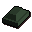 Adamantite bar | 1-2 | 5/128 (3.91%) | |
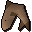 Shark | 4 | 1/32 (3.12%) | |
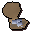 Oyster pearls | 4 | 1/32 (3.12%) | |
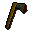 Adamant axe | 1 | 3/128 (2.34%) | |
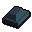 Runite bar | 1 | 3/128 (2.34%) | |
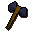 Mithril battleaxe | 1 | 3/128 (2.34%) | |
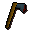 Rune axe | 1 | 1/64 (1.56%) | |
| Gem drop table table | see table | 1/64 (1.56%) | |
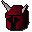 Dragon med helm | 1 | 1/128 (0.78%) |
Tertiary drops
| Item | Quantity | Rarity | Notes |
|---|---|---|---|
| Clue scroll (hard) | 1 | 1/128 (0.78%) | members |
Locations
| Area | Coordinates | Level | Count | Map |
|---|---|---|---|---|
| Sorcerers' Tower (underground) | 2716, 9817 | 0 | 1 | view |
Quests
Referenced in scripts
scripts/_test/scripts/engine/debug_npc.rs2scripts/areas/area_wilderness/scripts/king_black_dragon.rs2scripts/quests/quest_mcannon/scripts/cannon_fire.rs2